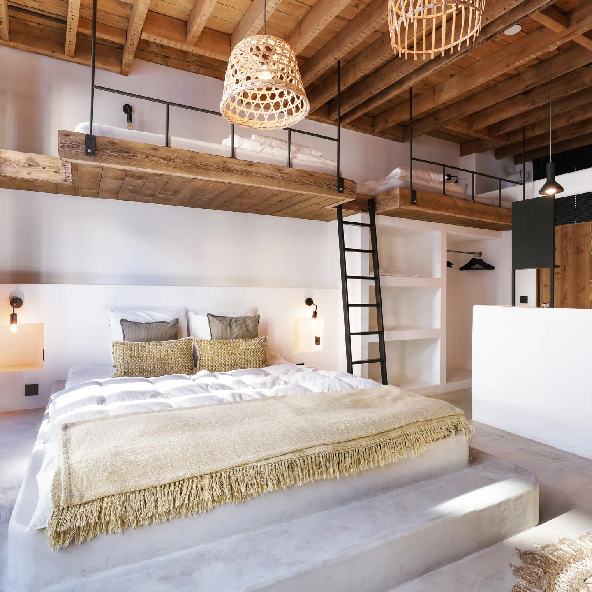

Modekwartier
Leeuwenstraat 9
Vlak bij de Vrijdagmarkt
Beneden was ooit een bekend volkscafé. Nu is het jullie eigen café-bistro, met een open keuken en plaats aan tafel voor veertien.
4 tot 10gasten
14aan tafel
4,9op Google
- ZolderSlaapkamer met kingsize bed en eigen badkamer
- Verdiep 3Eigen salon met gashaard en grote zetel
- Verdiep 1 en 2Twee slaapkamers voor vier, met regendouche
- BenedenCafé-bistro, open keuken en eettafel